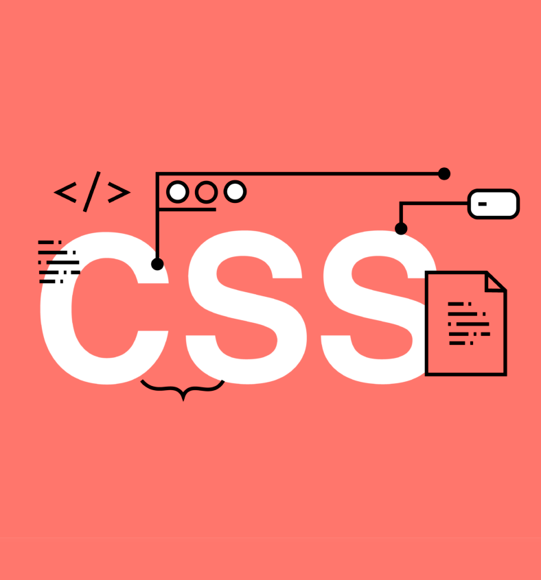
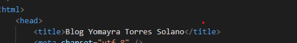

Semana 2
FECHA
HORA
Consiste en una serie de elementos que usarás para encerrar diferentes partes del contenido para que se vean o comporten de una determinada manera.

Es un lenguaje de diseño gráfico que se escribe dentro del código HTML del sitio web y, permite crear páginas de una manera más exacta y aplicarles estilos (colores, márgenes, formas, tipos de letras, etc.) .
Después de descargar él programa, instálalo a su PC o laptop. Cuando tengas tú template elegido, lo colocas en tu escritorio.
Abres tu visual "studio code" y La carpeta del template colocas en visual. Después te va a salir un comunicado y seleccionas el cuadrado que dice "yes"
.
Te saldrá de esta manera y seleccionas index.html para poder modificar la plantilla.
Seleccionas index.html.Despues va salir html del indice y puedas ir modificando.
COMENSAMO A PROGRAMAR
Colócanos (titile) para que aparezca en la pasteña superior.

Después cambiamos el texto que estaba en el logo por "Laboratorio 2"
Si quieres personalizar la bienvenida a tu blog. Tenemos que abrir contenedor con (header )y después colocamos un encabezado (h1)en esa parte, colocamos lo que queremos que se vea grande.
(li)Inserta un ítem en una lista. En nuestro caso es la lista de nuestro menú. Aquí podemos cambiar por las cosas queremos que tenga nuestra Menú
Si queremos cambiar el fondo del blog vamos CSS. en la parte de #main.css
Buscamos el Background del fondo y colocamos el codigo del color del fondo que vamos a decear.
También podemos cambiar el color nuestro contendido.Algo así quedaria.
Un método más fácil para encontrar donde esta el color en CSS.
Apretamos clic derecho y seleccionamos "inspeccionar".
Nos va aparecer así.Aquí nos sale donde esta
ubicado el color.Bueno un
aproximado.
Vamos a nuestro visual estudio y comenzamos a buscar en el puesto que esta. En nuestro caso esta 2532
Si quieres colocar una imagen en estos cuadrados que aparecen.
Primero tenemos que descargar una y guardarlo con un nombre corto, para que cuando lo busques sea facil.
Después de tener la imagen , lo colocamos en la carpeta de imagen de nuestro template.
Si queremos colocamos colocar una imagen, colocamos la etiqueta(ing src:"images/ "...." alt="")